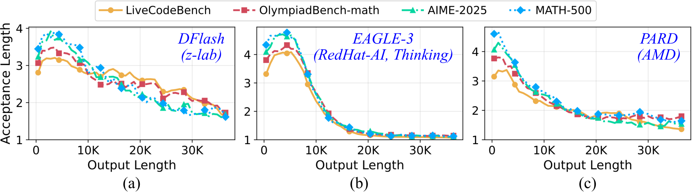
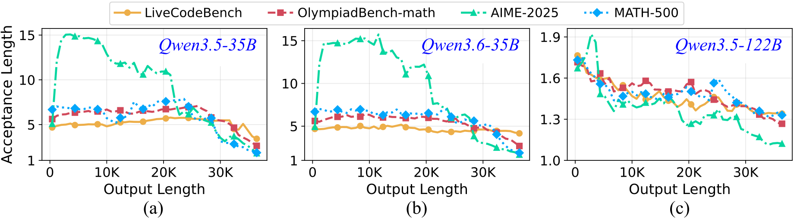

TL;DR Speculative decoding makes LLMs faster by letting a small draft model guess tokens that the big target model then checks. But the draft was trained on short text, and on long generations its guesses stop landing. TTS notices that every check already tells the draft exactly what the target wanted, and uses that signal to update the draft on the fly. No new data, no extra target calls, and the output stays exactly the target's.
Two-minute explainer
See it in action
The problem
Speculators run out of steam
The speedup from speculative decoding comes down to one number: the acceptance length, or how many draft tokens the target accepts per round. An acceptance length near 1 means the draft is contributing nothing.
That is where today's best speculators end up. DFlash, EAGLE-3 and PARD all start strong, then lose ground as the response grows. On LiveCodeBench with Qwen3-8B, EAGLE-3's acceptance length falls to 1.1 beyond about 20K tokens. Reasoning, coding and agentic workloads routinely produce outputs that long.

Acceptance length on four tasks with (a) DFlash, (b) EAGLE-3 and (c) PARD on Qwen3-8B. It drops steadily as generation length grows.
A bigger target does not fix it. The same decline shows up on Qwen3.5-35B, Qwen3.6-35B and Qwen3.5-122B.

DFlash on (a) Qwen3.5-35B, (b) Qwen3.6-35B and (c) Qwen3.5-122B.
The diagnosis
The draft is far from home
Speculators are small networks trained offline on short sequences, typically under 2K tokens. At inference they are asked to track the target across outputs many times longer, well outside what they saw in training.
The entropy curves show the two models pulling apart. As the output grows, the target becomes more confident about the next token. Over the same stretch, the draft becomes less able to predict the target's top choice. This happens for tokens that already appeared in the context and for unseen ones alike.
Llama3.1-8B (target) with EAGLE-3 (draft). (a) Target entropy falls with output length. (b) The draft's cross-entropy on the target's top-1 token rises sharply. (c) The gap persists for both repeated and unseen tokens.
Closing the gap means adapting the draft at inference time.
The method
The teacher is already in the room
Each round of speculative decoding runs the target over every draft token to verify it. That pass produces the target's full distribution at each position, which is exactly the supervision a distillation step needs. Standard speculative decoding uses it to accept or reject, then throws it away.
TTS keeps it. The target is the teacher, the draft is the student, and each verified canvas is a training sample. After verification the draft takes one gradient step, then drafts again.
Watch a generation unfoldoutput tokens: 0
Frozen drafttrained offline, never updated
–acceptance length
Draft + TTSone gradient step per round
–acceptance length
Illustrative animation of the mechanism, not measured data. See the figures below for real results.acceptedrejecteddiscarded
1
Draft
The current draft \(q_t\) proposes a canvas of \(C\) tokens, as in ordinary speculative decoding.
2
Verify
The target \(p\) scores the whole canvas in one forward pass and accepts a prefix by rejection sampling. The output distribution is exactly the target's.
3
Update
The draft takes one gradient step toward the target's distributions on that canvas, with a regularizer that keeps it close to where it was.
Early canvas positions get larger weights \(w_k\), since one rejection discards everything after it. TTS reuses the weights from each speculator's own training recipe.
Making it pay off in wall-clock time
A backward pass every round costs time, so higher acceptance length alone does not guarantee higher throughput. Two system choices close that gap.
Strided, asynchronous updates
TTS updates once every \(\mathcal{S}\) rounds and runs the update on a side CUDA stream, in parallel with the next \(\mathcal{S}-1\) speculate-verify rounds. The update stays off the critical path.
Per-request LoRA for batching
In a batch, one request's update must not disturb another's draft. TTS freezes the shared speculator and gives each request its own rank-16 LoRA adapter: 7.9 MB per GPU on GPT-OSS-120B, versus about 1270 MB for a full private copy.
Every \(\mathcal{S}\) rounds, a gradient update is dispatched to a side stream and overlaps with the following rounds on the main stream.
The results
The longer it runs, the more it helps
72%
higher acceptance length, at best
41%
higher acceptance length, on average
1.81×
best batched throughput gain over EAGLE-3
10
target models, from 4B to 229B parameters
Evaluated on DFlash, EAGLE-3 and PARD across the Qwen-3, Qwen-3.5, DeepSeek-R1, GPT-OSS, MiniMax and Llama3.1 families.
LiveCodeBench on Qwen3-8B. (a) All three speculators decay toward an acceptance length of 1. (b) TTS adapts the draft in real time and consistently improves acceptance length.
Gains grow with output length
Each update leaves the draft a little better matched to the response in progress, so the advantage compounds as generation continues.
TTS versus DFlash on (a) AIME 2024 and (b) LiveCodeBench with Qwen3-8B.
Long agentic sessions
On multi-turn agentic tasks from OpenThoughts with MiniMax-M2.5, DFlash loses acceptance length turn after turn. TTS holds it, and its lead reaches 86% at turn 15.
(a) Acceptance length across turns. (b) Improvement of TTS over DFlash.
Throughput under batched serving
Tokens per second on GPT-OSS-120B against NVIDIA's EAGLE-3 speculator, with per-request LoRA adapters and \(\mathcal{S}=10\). TTS is 1.3–1.8× faster at every batch size and benchmark. For a single request on Qwen3.5-122B, a stride of 5 gives 1.54× over DFlash on average and up to 1.71×.
Benchmark
Approach
BS = 8
BS = 16
BS = 32
BS = 64
AIME 2024
EAGLE-3
338.6
526.9
767.6
877.8
TTS
527.61.56×
708.11.34×
1264.01.65×
1353.11.54×
AIME 2025
EAGLE-3
354.1
536.4
877.5
1053.1
TTS
480.31.36×
858.81.60×
1285.71.47×
1509.61.43×
GPQA Diamond
EAGLE-3
360.3
562.7
865.5
1009.4
TTS
531.91.48×
884.91.57×
1328.41.53×
1635.71.62×
LiveCodeBench
EAGLE-3
330.2
425.4
752.9
820.5
TTS
454.71.38×
771.41.81×
1141.71.52×
1341.11.63×
And the divergence shrinks
Back to the diagnosis: with TTS, the draft's cross-entropy on the target's top choice no longer climbs the way it does for the frozen draft.
Cross-entropy of EAGLE-3 on the Llama3.1-8B target's top-1 token, with and without TTS.
Read the full abstract
Speculative decoding accelerates LLM inference by using a fast draft model to generate tokens and a more accurate target model to verify them. Its performance depends on the acceptance length, or number of draft tokens accepted by the target. Our studies show that the acceptance length of even state-of-the-art speculators, like DFlash, EAGLE-3, and PARD, degrades with generation length, reaching values close to 1 (i.e., no speedup) within a few thousand output tokens, making speculators ineffective for long-response tasks. Acceptance lengths decline because most speculators are trained offline on short sequences, but are forced to match the target on much longer outputs at inference, well beyond their training distribution.
To address this issue, we propose Test-Time Speculation (TTS), an online distillation approach that continuously adapts the speculator at test time. TTS leverages the key insight that the token verification step already invokes the target model for each draft token, providing the training signal needed to adapt the draft at no additional cost. Treating the draft as the student and the target as the teacher, TTS adjusts the draft over several speculation rounds, with each update improving the draft's accuracy as generation proceeds. Our results across ten models from the Qwen-3, Qwen-3.5, DeepSeek-R1, GPT-OSS, MiniMax, and Llama3.1 families show that TTS improves acceptance lengths over state-of-the-art speculators by up to 72% and 41% on average, with the benefits scaling with generation lengths.
BibTeX
@inproceedings{kumar2026test,
title = {Test-Time Speculation},
author = {Kumar, Avinash and Sanghavi, Sujay and Das, Poulami},
booktitle = {Advances in Neural Information Processing Systems},
year = {2026}
}